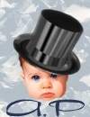

| 
por André Pascual Sobre el Author: Dibujante industrial,ahora profesor de productica,enseña la CAO (concepcion asistida por ordenador). La infografia y en especial el dibujo en tercera dimension es una de sus pasiones. Contenidos: |
Resumen:
Algunos productos comerciales de alto precio,como Painter5,permiten de "pintar" con fuego; otros,como Phptpshop o Paint Shop Pro permiten gracias a sus utiles crear la ilusion de que un objeto se prende fuego. The Gimp con Linux,considerado como el Photoshop gratis,debia obtener el mismo resultado. Procedimiento en cinco etapas y once imagenes,pudiendo ser adaptado facilmente a Photoshop y Paint ShopPro.
Se puede realizar un logo muy facilmente con The Gimp puesto que se
trata de una funcion basica.
Elegir Xtns->Logo->Glowing Hot
Conservar los parametros estipulados, los colores y el " Slogan "
siendo lo suficientemente evocador de fuego (pero obviamente que podemos usar
cualquier otro tipo de logo)
Entrar el texto " Llamas " (Flammes en francés),
validar con OK (ver Figura 1)
Queremos un fondo transparente para integrar el texto en otra imagen.
Debemos suprimir el fondo negro :
Clic derecho en la imagen ->Layers->Layers & Channels
Seleccionar cliqueando en el X de la tabla de dialogo.
Clic derecho en la imagen ->Layers ->Merge Visibles Layers
Luego clic derecho en la imagen ->Edit ->Copy
El objeto-texto esta a la espera de ser pegado.
El objeto-texto tiene una dimension aproximativa de 560x200,
debemos crear una imagen que pueda recibirlo :
File -> New>Width 600 > Height 300 >RGB >Background ->OK
La nueva imagen llega con un fondo blanco que vamos a pintar en degradé negro/amarillo
El color negro estando ya disponible, debemos reemplazar el balco por un amarillo :
Clic en el blanco, luego entre en la paleta los valores R255/G148/B0->OK
Doble clic en " Fill with a color gradient ".
La opcion por defecto debe ser Gradient Linear ; si no es asi, seleccionarla.
Trazar en el fondo blanco una vertical de abajo hacia arriba.
El fondo blanco es reemplazado por el degradé (ver etapa 2)
Clic derecho en la imagen ->Layers->Layers & Channels-> New Layer->
Layer Name : Texte ->OK
Por defecto este nuevo calco es el calco activo.
Minimizar la tabla de dialogo (o cerrarla)
Activar la imagen degradé y clic derecho en la imagen ->Edit->Paste
Posicione el objeto-texto debajo de la imagen (en la zona oscura)
Y deseleccionelo (ver etapa 3)
Se necesitaran dos calcos para ello : uno para lograr la forma de las llamas, y el otro para realizar el color por combinacion con el precedente.
Crear un calco " Feu 1 "
Pegar el objeto-texto poniéndolo sobre el primer texto.
El calco " Feu 1 " estando siempre activo,
active Keep Trans (para preservar la transparencia)
luego seleccionar un amarillo muy palido R251/G247/B128 y un
cepillo redondo de 19x19 para
Files ->Dialogs->Brushes
Enduir el calco " Feu 1 ". Como la opcion Keep Trans
fue selecta solo el texto sera pintado.
Desactive Keep Trans cuando haya terminado el enduido.
Deforme el texto de " Feu1 " con :
Filters->Distords->Shift->Shift verticaly->Shift Amount :50->OK
Filters->Distords->Waves->Amplitude 12->Phase0->Waveheight 50->OK
En ese estado de la deformacion, los contornos son demasiados netos para ser llamas.
(Ver figura 4_1)
Copiar el calco " Feu 1 " (el calco derecho debe estar activado)
Crear un calco " Feu 2 " Pegar las llamas de Feu 1 "
en ese calco
Activar Keep Trans, pintarlo en rojo R247/G79/B56
Cambiar el modo de mezcla de calcos : en funcion del color deseado para
las llamas, podremos elegir el modo : screen, overlay, lighten only o color
(ver Figura 5).
Activar el calco " Background "
Script-Fu->Decor->Lava (conservar los valores por defecto) ->OK
Un calco " Lava Layer " se crea automaticamente encima
del calco " Background "
Mezclarlo en modo Color
Aplastar la imagen con Layers->Flatten Image (ver figura7)
Mas alla del efecto espectacular y anecdotico, podemos preguntarnos cual es la utilidad de esta operacion. La imagen Exemple.jpg es una respuesta a esa pregunta. Se trata de un proyecto de ilustracion de un folleto para clases de danza. La silueta de la bailarina es la incrustacion, con juegos cromaticos, de una fotografia de Sylvain Landry. Con su autorizacion.
|
Contactar con el equipo de LinuFocus
© André Pascual LinuxFocus 1999 |
Translation information:
|
1999-11-04, generated by lfparser version 0.6
{kind=link}